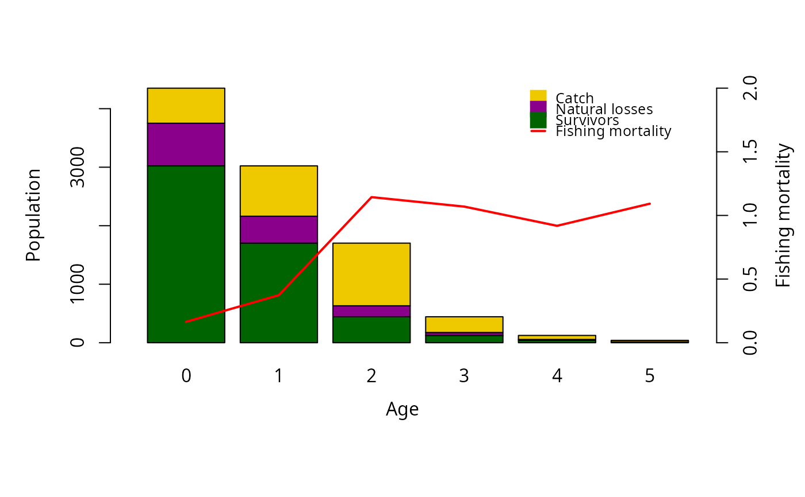
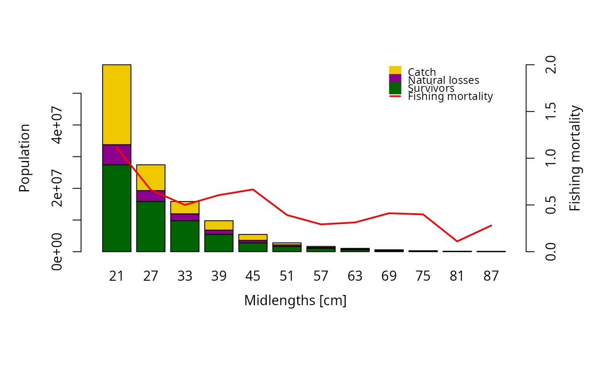

This function plots the survivors, catches, natural losses, and fishing mortality resulting from the VPA model.
Usage
# S3 method for class 'VPA'
plot(
x,
yaxis = "numbers",
display_last_class = TRUE,
xlabel = NA,
ylabel1 = "Population",
ylabel2 = "Fishing mortality",
ylim = NA,
ylim_FM = NA,
plot.bars = TRUE,
plot.FM = TRUE,
plot.legend = TRUE,
...
)Arguments
- x
list of the class
"VPA"containing the results of the VPA model.- yaxis
indicating which variable should be displayed on the y axis, either "numbers" or "biomass".
- display_last_class
logical; should last age/length class be displayed in graph?
- xlabel
Label of the x axis
- ylabel1
Label of the first y axis
- ylabel2
Label of the second y axis
- ylim
limits of y axis
- ylim_FM
limits of y axis of fishing mortality plot
- plot.bars
logical; should the barplot of survivors, nat.losses and catch be displayed? (Default: TRUE)
- plot.FM
logical; should the fishing mortality be displayed in the graph? (Default: TRUE)
- plot.legend
logical; should a legend be displayed in the graph? (Default: TRUE)
- ...
standard parameters of
barplot
References
Sparre, P., Venema, S.C., 1998. Introduction to tropical fish stock assessment. Part 1. Manual. FAO Fisheries Technical Paper, (306.1, Rev. 2). 407 p.
Examples
data(whiting)
output <- VPA(whiting, terminalF = 0.5)
#> Warning: Age/length classes and the real cohort in the catch matrix do not have the same length. The missing age/length classes will be omitted.
#> A catch matrix was provided: The VPA/CA will follow the 'real' cohort, assuming yearly intervals in the catch matrix. If you want to perform the VPA/CA with a pseudo cohort please use the argument 'catch_columns' specifying which column(s) of the catch matrix to use.
#> Warning: You did not specify catch_unit. The Method assumes that catch is provided in numbers!
plot(output, display_last_class = FALSE)

data(hake)
output <- VPA(hake, terminalE = 0.5, catch_unit = "'000")
plot_mat <- output$plot_mat[,-c(1,2)] # remove first two length classes
class(plot_mat) <- "VPA"
plot(plot_mat, xlabel = "Midlengths [cm]")
